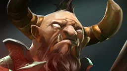

Last-hit pace
| Minute | Last hits |
|---|---|
| 3:00 | 4–10 |
| 5:00 | 10–20 |
| 10:00 | 25–45 |
| 15:00 | 52–66 |
| 20:00 | 84–105 |
| 25:00 | 119–144 |
| 30:00 | 154–182 |
Below the lower number, the coach tells you during the match and shows a good pace for that minute.

Centaur Warrunner is an offlaner who starts the fights. These are the numbers Wardly uses on this hero during the match: how many last hits, when to back off and what saves you.
| Minute | Last hits |
|---|---|
| 3:00 | 4–10 |
| 5:00 | 10–20 |
| 10:00 | 25–45 |
| 15:00 | 52–66 |
| 20:00 | 84–105 |
| 25:00 | 119–144 |
| 30:00 | 154–182 |
Below the lower number, the coach tells you during the match and shows a good pace for that minute.
Free, for Windows 10 and 11. Valve's official integration — no risk for your account.
Download for Windows